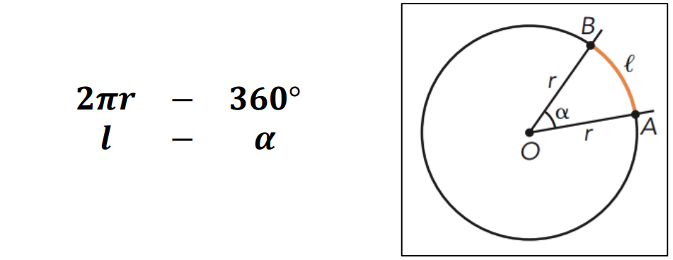
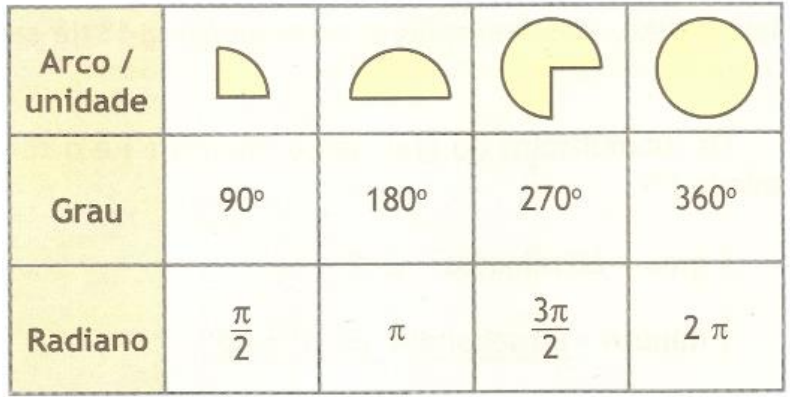
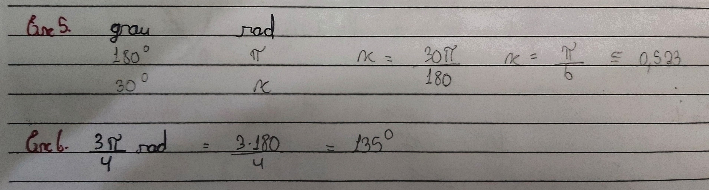
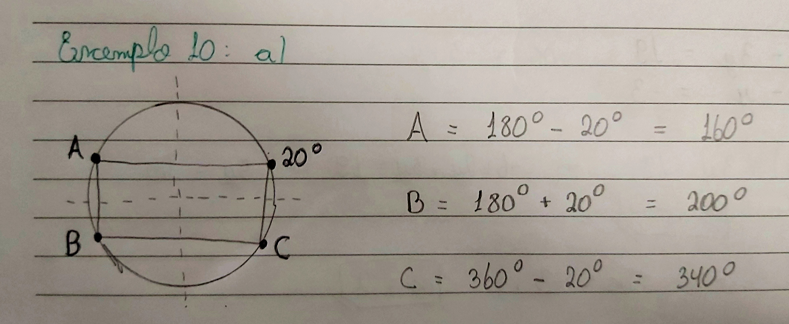
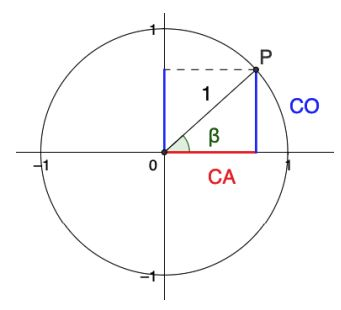

Arco é a parte da circunferência que é limitada por dois pontos, em cada arco é associado a medida do comprimento, a medida angular e ao raio da circunferência. Isso pode ser calculado a partir de uma regra de 3 trazendo a comparação da circunferência com o ângulo de 360°.
A circunferência do círculo é calculada a partir da seguinte fórmula: C = 2𝝅r
Arcos, disponibilizado pela professora Dra. VALÉRIA ESPÍNDOLA LESSA, no material didático: MD7 - ARCOS E CICLO TRIGONOMÉTRICO, na página 9, disponível no SIGAA, para a turma de informática do segundo ano, de 2024, do IFRS, Campus Erechim.
Graus e Radianos são diferentes unidades de medida de ângulos. Os radianos surgiram quando foi dividido um círculo em seis partes iguais com o tamanho do raio igual ao tamanho do arco e sobrou 0,28r. Com isso surge que a metade da circunferência é 3,14 radianos. A partir disso surge a relação: 𝝅 rad = 180°
Relação Graus - Radianos, disponibilizado pela professora Dra. VALÉRIA ESPÍNDOLA LESSA, no material didático: MD7 - ARCOS E CICLO TRIGONOMÉTRICO, na página 9, disponível no SIGAA, para a turma de informática do segundo ano, de 2024, do IFRS, Campus Erechim.
O ciclo trigonométrico acontece dentro de um plano cartesiano de raio 1 unidade, onde o eixos das abscissas e ordenadas dividem os quatro quadrantes do ciclo. O ponto A (1, 0) é quem dá origem a todos os arcos, o ponto de origem. Se o movimento ocorrer no sentido anti-horário o sentido será POSITIVO, se ocorrer no sentido horário terá o sentido NEGATIVO.
Arcos côngruos são arcos que possuem diferentes medidas de graus e radianos, mas ocupam o mesmo ponto do ciclo trigonométrico, como exemplo (0 e 360°). Mas também podemos ter ângulos com voltas inteiras e que param em algum ponto, o ângulo de 510° vai ser igual a uma volta inteira, 360°, mais 150°, sendo assim 510° é côngruo de 150° já que ambos ocupam a mesma posição no ciclo. Como expressão geral temos: a+k.2.𝝅 ou a+k.360°, sendo a igual a 1ª determinação positiva do arco.
Um ponto no ciclo tem outros três pontos semelhantes em relação ao eixo das ordenadas e em relação ao eixo das abscissas e em relação a ambos, esses pontos são como se fosse o espelhamento do ponto, ou seja, usando como referência o ponto A = 0º, se marcamos o ponto b em 20º temos como ponto semelhante o ponto em 340º, já que é 20º a menos que a circunferência total, 360º, na reflexão no eixo das abscissas. Isso quando combinado com a reflexão no eixo das ordenadas formam um quadrado como mostra a figura abaixo.
Assim como temos as razões em um triângulo retângulo, no ciclo não seria diferente, já que temos a possibilidade de ângulos maiores que 90º. Essa razão acontece porque quando marcamos um ângulo no ciclo usando o eixo do cosseno, conseguimos desenhar um triângulo retângulo, se movermos o eixo do seno. E como o raio de ciclo é de uma unidade, temos que a hipotenusa é igual a 1, com isso é possível definir um teorema denominado TEOREMA FUNDAMENTAL DA TRIGONOMETRIA.
Razões trigonométricas, disponibilizado pela professora Dra. VALÉRIA ESPÍNDOLA LESSA, no material didático: MD7 - ARCOS E CICLO TRIGONOMÉTRICO, na página 16, disponível no SIGAA, para a turma de informática do segundo ano, de 2024, do IFRS, Campus Erechim.
O TEOREMA FUNDAMENTAL DA TRIGONOMETRIA será definido como o teorema de pitágoras, já que possuímos um triângulo retângulo, com já vimos, a hipotenusa é igual a 1, ou seja, o teorema será: sen²(a) + cos²(a) = 1.